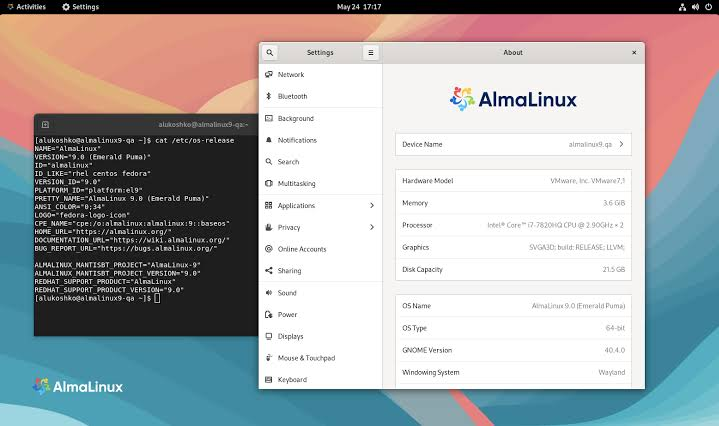

Peoject ini memuat pegerjaan mata pelajaran DTP kami selama satu semester ini, kami berharap dengan pengerjaan project ini dapat membuat keterampilan kami bisa menjadi acuan pembelajaran untuk teman teman kami yang ada diluar sana~
Pengenalan perangkat keras
Pengenalan Perangkat Keras adalah pemahaman dasar tentang komponen fisik yang membentuk sistem komputer. Perangkat keras terdiri dari berbagai elemen, termasuk CPU (prosesor) yang menjalankan instruksi, RAM (memori sementara) yang menyimpan data aktif, penyimpanan seperti HDD atau SSD untuk data jangka panjang, dan perangkat input/output seperti keyboard, mouse, dan monitor. Memahami perangkat keras penting untuk mengoptimalkan kinerja komputer, melakukan upgrade, serta memecahkan masalah yang mungkin timbul.
Learn more

Simulasi Rakit PC
Simulasi Rakit PC adalah proses perakitan komputer virtual yang memungkinkan pengguna memahami cara menyusun komponen PC seperti motherboard, CPU, RAM, kartu grafis, dan penyimpanan tanpa memerlukan perangkat fisik. Dengan menggunakan perangkat lunak simulasi, pengguna dapat belajar tentang kompatibilitas komponen, pemasangan, serta konfigurasi sistem. Simulasi ini berguna untuk pemula yang ingin belajar merakit PC sebelum melakukan perakitan nyata.
Learn more

Pengealan Alma Linux
Pengenalan AlmaLinux adalah langkah untuk memahami distribusi Linux yang berbasis RHEL (Red Hat Enterprise Linux) dan dikembangkan sebagai alternatif gratis setelah Red Hat mengubah kebijakan distribusi CentOS. AlmaLinux bertujuan untuk memberikan stabilitas dan dukungan jangka panjang bagi pengguna dan pengembang, dengan kompatibilitas penuh dengan perangkat lunak yang dirancang untuk RHEL. AlmaLinux juga memiliki komunitas yang aktif dan dukungan dari organisasi nirlaba, memastikan pembaruan keamanan dan pemeliharaan yang berkala. Dengan sifatnya yang open-source, AlmaLinux cocok untuk penggunaan di server dan lingkungan produksi yang memerlukan keandalan tinggi.
Learn more
Instalasi Debian dan mengatur SSHdi Web server.
Instalasi Debian dan Mengatur SSH di Web Server** mencakup proses instalasi sistem operasi Debian, diikuti dengan konfigurasi layanan SSH untuk akses jarak jauh. Setelah menginstal Debian, pastikan paket SSH diinstal menggunakan `sudo apt install openssh-server`, kemudian aktifkan layanan dengan `sudo systemctl enable ssh` dan `sudo systemctl start ssh`. Konfigurasi lebih lanjut, seperti pengaturan port atau otentikasi kunci publik, dapat dilakukan dengan mengedit file `/etc/ssh/sshd_config`. Dengan ini, server siap diakses secara aman melalui SSH untuk pengelolaan jarak jauh.
Learn more
Instalasi Apache2 di Server Debian.
Instalasi Apache2 di Server Debian** adalah proses mengatur server web Apache pada sistem operasi Debian. Langkah-langkahnya meliputi memperbarui repositori dengan `sudo apt update`, menginstal Apache2 menggunakan `sudo apt install apache2`, dan memastikan layanan berjalan dengan `sudo systemctl start apache2`. Setelah instalasi, Anda dapat mengakses server melalui browser dengan mengetikkan alamat IP server, dan Apache2 siap digunakan untuk menghosting aplikasi atau situs web.
Learn more
Mempelajari 60 Command Linux Dasar
Mempelajari 60 Command Linux Dasar** adalah langkah penting untuk memahami pengelolaan sistem berbasis Linux. Command-command ini mencakup operasi dasar seperti navigasi file dengan `ls` dan `cd`, manipulasi file dengan `cp`, `mv`, dan `rm`, pengelolaan pengguna dan izin dengan `chmod` dan `chown`, hingga monitoring sistem menggunakan `top` atau `df`. Dengan menguasai perintah-perintah ini, Anda dapat lebih efisien mengelola sistem Linux secara mandiri.
Learn more
Konfigurasi Tunnel web local ke Public menggunakan Cloudfalre
Konfigurasi tunnel web lokal ke public menggunakan Cloudflare** dilakukan dengan memanfaatkan Cloudflare Tunnel untuk menghubungkan server lokal ke internet secara aman tanpa membuka port atau mengubah firewall. Anda hanya perlu menginstal *cloudflared*, mengautentikasinya dengan akun Cloudflare, dan membuat tunnel untuk aplikasi lokal. Selanjutnya, atur DNS pada Cloudflare untuk mengarahkan domain atau subdomain ke tunnel tersebut, sehingga web lokal dapat diakses secara publik.
Learn more
Menjalankan 2 Webserver di satu server Beserta tunnelingnya.
Menjalankan 2 webserver di satu server beserta tunnelingnya** adalah mengoperasikan dua layanan web secara bersamaan dengan konfigurasi port berbeda, misalnya port 80 untuk webserver pertama dan port 8080 untuk yang kedua. Tunneling digunakan untuk mengamankan atau mengarahkan akses, dan reverse proxy seperti Nginx dapat membantu mengelola lalu lintas ke masing-masing webserver.
Learn more